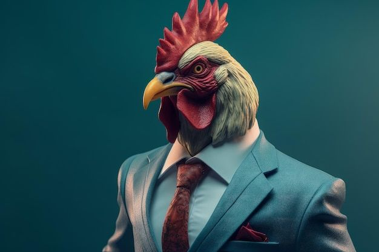

Biografia
Com anos de experiência na produção de ovos frescos e na manutenção do galinheiro, sou uma galinha dedicada e atenta às necessidades do meu entorno. Especializada em forrageamento eficiente e proteção contra predadores, além de ser líder natural quando se trata de cuidados com as ninhadas. Busco sempre agregar valor ao ecossistema rural com meu trabalho constante e comprometido.